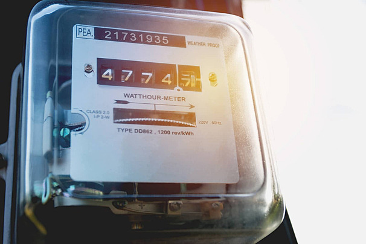
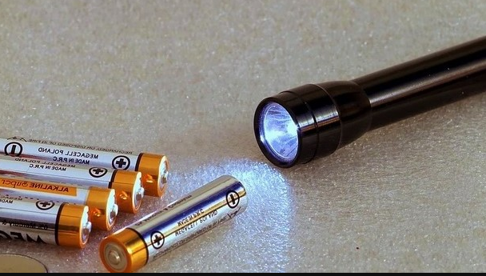
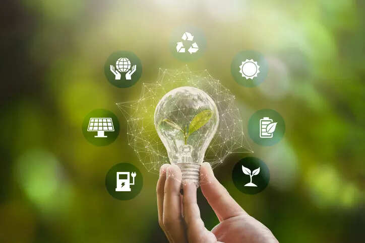
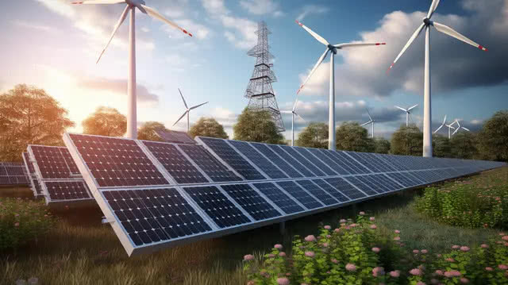
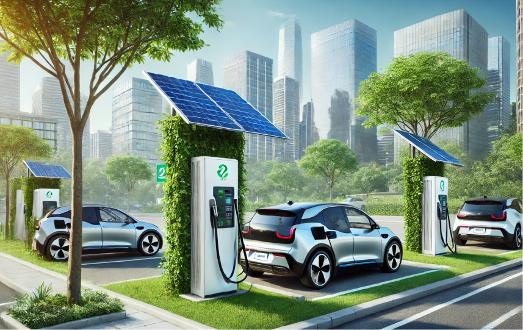

Bab 4: Energi dan Perubahannya
A. Pengantar Konsep Energi
Coba bayangkan kehidupan tanpa energi: lampu tak menyala, kendaraan tak bergerak, tumbuhan tak tumbuh, tubuh manusia tak bisa berdiri, bahkan Bumi berhenti berputar. Semuanya berhenti.
Dalam sains, energi didefinisikan sebagai kemampuan untuk melakukan usaha (work) atau menyebabkan perubahan. Ia tak selalu tampak, tapi kehadirannya bisa dirasakan dari akibat yang ditimbulkan. Setiap kali sesuatu bergerak, berpindah, atau berubah bentuk, energi sedang bekerja.
Ketika bola dilempar dan meluncur di udara, ketika air mendidih di atas api, atau ketika matahari menghangatkan kulit — itu semua adalah wujud nyata energi yang berpindah dan berubah dari satu bentuk ke bentuk lain.

Letakkan file gambar dengan nama "gambar1.jpg" di folder "s1-bab-4"
1. Energi sebagai Penggerak Kehidupan
Energi bukan hanya urusan mesin dan laboratorium; ia adalah bagian dari kehidupan itu sendiri. Tumbuhan mendapatkan energi dari cahaya matahari melalui fotosintesis. Hewan dan manusia kemudian memakan tumbuhan atau hewan lain untuk memperoleh energi kimia yang tersimpan dalam makanan. Lalu tubuh kita mengubah energi kimia itu menjadi gerak, panas, dan pikiran.
Kesimpulan Penting:
Dengan kata lain, setiap detik dalam hidup kita adalah hasil dari proses transformasi energi. Energi adalah "mata uang universal" yang menghubungkan semua sistem di alam — dari gerak elektron di atom, hingga rotasi planet di langit. Dalam fisika, semua fenomena pada dasarnya bisa dipahami sebagai perpindahan dan perubahan energi.
2. Energi dalam Kehidupan Sehari-hari
Energi hadir dalam setiap aktivitas manusia, baik disadari maupun tidak.
- Ketika seseorang menyalakan ponsel, energi listrik diubah menjadi energi cahaya dan suara.
- Saat memasak, energi kimia dalam gas diubah menjadi energi panas.
- Dan ketika seseorang bersepeda, energi kimia dari makanan diubah oleh otot menjadi energi gerak.
Dengan memahami hal ini, kita menyadari bahwa setiap tindakan kita memiliki biaya energi, dan energi tidak bisa muncul begitu saja — ia selalu berasal dari suatu sumber.
3. Sifat Dasar Energi
Ada dua sifat utama yang perlu dipahami sejak awal:
- Energi tidak dapat diciptakan maupun dimusnahkan, hanya dapat diubah bentuknya (Hukum Kekekalan Energi). Artinya, jumlah total energi di alam semesta selalu tetap, hanya berganti wujud — seperti uang yang berpindah dompet, bukan lenyap begitu saja.
- Energi dapat berpindah dari satu benda ke benda lain. Misalnya, ketika kamu menendang bola, energi dari otot berpindah melalui kaki ke bola. Begitu juga dengan sinar matahari yang memindahkan energi ke bumi, memanaskan udara, menguapkan air, dan menggerakkan angin. Semua fenomena ini saling terhubung dalam rantai energi yang panjang.
4. Mengapa Energi Penting Dipelajari
Pemahaman tentang energi adalah fondasi bagi seluruh cabang ilmu alam — dari fisika dan kimia hingga biologi dan geografi. Melalui energi, kita memahami mengapa sesuatu bisa bergerak, bagaimana panas berpindah, bagaimana listrik bekerja, dan bagaimana kehidupan bisa berlangsung di Bumi.
Lebih dari itu, di era modern manusia sangat bergantung pada energi untuk teknologi, transportasi, dan komunikasi. Namun, penggunaan energi juga menimbulkan tantangan besar: ketergantungan pada bahan bakar fosil, pemanasan global, dan krisis sumber daya.
Maka, belajar tentang energi tidak hanya soal memahami hukum fisika, tetapi juga soal memikirkan masa depan peradaban manusia.
— Relevansi Pembelajaran IPAS
B. Besaran dan Pengukuran
Ilmu pengetahuan tumbuh karena manusia belajar mengukur. Tanpa ukuran, energi hanya akan menjadi konsep kabur — terasa, tapi tak bisa dibuktikan. Dengan pengukuran, energi berubah menjadi sesuatu yang bisa dihitung, dibandingkan, dan dipahami secara ilmiah. Karena itulah, di dunia sains, energi disebut sebagai besaran turunan fisika — ia diturunkan dari besaran dasar seperti massa, panjang, dan waktu.

Letakkan file gambar dengan nama "gambar2.jpg" di folder "s1-bab-4"
1. Pengertian Besaran dan Satuan
Besaran adalah segala sesuatu yang dapat diukur dan dinyatakan dengan angka. Misalnya panjang dalam meter, massa dalam kilogram, waktu dalam sekon.
Untuk energi, satuan yang digunakan dalam Sistem Internasional (SI) adalah Joule (J) — diambil dari nama fisikawan Inggris James Prescott Joule, yang membuktikan bahwa panas dan usaha mekanik adalah dua bentuk energi yang setara.
Selain Joule, ada satuan lain yang biasa digunakan:
| Satuan | Penggunaan | Konversi ke Joule |
|---|---|---|
| Kalori (cal) | Energi panas dalam makanan | 1 kalori = 4,184 Joule |
| Kilowatt-jam (kWh) | Energi listrik (tagihan listrik) | 1 kWh = 3.600.000 Joule |
| Elektronvolt (eV) | Energi partikel subatomik | 1 eV = 1,602 × 10⁻¹⁹ Joule |
2. Energi, Usaha, dan Daya
Dalam fisika, energi selalu terkait dengan dua konsep kunci: usaha (work) dan daya (power).
Rumus Dasar:
Usaha (W) = Gaya (F) × Perpindahan (s)
W = F × s (diukur dalam Joule)
Energi adalah kemampuan untuk melakukan usaha. Jika kamu mendorong meja hingga bergeser, energi dari tubuhmu berpindah menjadi usaha yang memindahkan benda.
Rumus Daya:
Daya (P) = Usaha (W) / Waktu (t)
P = W / t (diukur dalam Watt)
Analogi Praktis:
Ketiga konsep ini saling terhubung. Energi adalah "bahan bakar" untuk usaha, sedangkan daya menunjukkan seberapa cepat energi itu digunakan. Contohnya, mobil sport dan mobil keluarga mungkin menempuh jarak yang sama (usaha sama), tapi mobil sport melakukannya dalam waktu lebih singkat — artinya dayanya lebih besar.
3. Cara Mengukur Energi
Energi bisa diukur dengan berbagai cara, tergantung pada bentuknya:
- Energi mekanik: diukur melalui gaya dan jarak (menggunakan dinamometer dan penggaris).
- Energi listrik: diukur dengan wattmeter atau kWh meter yang biasa dipasang di rumah.
- Energi panas (kalor): diukur menggunakan kalorimeter, alat yang menghitung perubahan suhu ketika suatu zat menerima atau melepaskan panas.
- Energi kimia: biasanya diukur secara tidak langsung melalui energi listrik atau panas yang dihasilkan dari reaksi.
Insight:
Semua alat ukur ini membantu manusia melihat sesuatu yang tak terlihat — membuat energi menjadi nyata dalam angka.
4. Penerapan dalam Kehidupan Sehari-hari
Pengukuran energi sangat penting dalam kehidupan modern.
- Setiap kali kita membayar listrik, tagihan yang tertera dalam kWh sebenarnya adalah hasil perhitungan jumlah energi listrik yang kita gunakan.
- Ketika kita membaca nilai kalori pada bungkus makanan, itu menunjukkan berapa banyak energi kimia yang akan dilepaskan tubuh saat mencerna makanan tersebut.
- Bahkan teknologi canggih seperti satelit dan mobil listrik pun tidak bisa lepas dari prinsip dasar pengukuran energi — karena tanpa angka, efisiensi dan perbandingan mustahil dilakukan.
Pengukuran energi juga menjadi alat refleksi: seberapa banyak energi yang kita habiskan untuk kenyamanan, dan seberapa besar dampaknya terhadap sumber daya bumi?
5. Hubungan Antara Besaran dan Energi
Energi bukan berdiri sendiri; ia lahir dari interaksi besaran lain.
Rumus Energi Kinetik:
Eₖ = ½ × m × v²
Energi Kinetik = ½ × massa × kecepatan²
Rumus Energi Potensial Gravitasi:
Eₚ = m × g × h
Energi Potensial = massa × gravitasi × ketinggian
Rumus-rumus ini menunjukkan bahwa energi selalu berakar dari massa, jarak, dan waktu. Dengan memahami hubungan ini, kita melihat bahwa setiap gerak di alam — dari jatuhnya tetesan hujan hingga ledakan bintang — tunduk pada pola matematis yang sama. Alam semesta ternyata memiliki tata bahasa sendiri, dan besaran fisika adalah kosakatanya.
C. Bentuk-Bentuk Energi
Energi adalah konsep yang serba lintas. Ia hadir dalam berbagai rupa, mengalir dari satu bentuk ke bentuk lain tanpa pernah benar-benar hilang. Dari cahaya matahari yang menghangatkan bumi, hingga gerakan kipas yang menyejukkan udara — semua berawal dari energi dalam bentuk yang berbeda.
Dengan memahami bentuk-bentuk energi, kita tidak hanya mempelajari "apa" yang menggerakkan dunia, tetapi juga "bagaimana" energi itu berpindah dan bekerja di dalamnya.

Letakkan file gambar dengan nama "gambar3.jpg" di folder "s1-bab-4"
a. Energi Mekanik
Energi mekanik adalah gabungan dari energi kinetik (energi gerak) dan energi potensial (energi yang tersimpan karena posisi). Setiap benda yang bergerak atau memiliki posisi tertentu terhadap bumi menyimpan energi mekanik.
- Energi kinetik (Eₖ = ½mv²) dimiliki benda yang bergerak. Contohnya: bola yang menggelinding, mobil melaju, atau air sungai yang mengalir. Semakin besar massa dan kecepatannya, semakin besar energi kinetiknya.
- Energi potensial (Eₚ = mgh) dimiliki benda karena posisinya terhadap permukaan bumi. Misalnya: batu di tepi tebing, air di bendungan, atau pegas yang ditarik. Semakin tinggi posisi atau semakin kuat gaya yang menegangkan benda, semakin besar energi potensialnya.
Contoh Transformasi:
Keduanya saling bertukar. Batu yang jatuh dari ketinggian mengubah energi potensialnya menjadi energi kinetik, hingga sesaat sebelum menyentuh tanah, seluruh energinya berupa energi gerak. Inilah contoh nyata bagaimana energi "bergerak" antar bentuk tanpa hilang sedikit pun.
b. Energi Panas (Kalor)
Energi panas adalah bentuk energi yang berpindah karena perbedaan suhu. Setiap partikel dalam zat selalu bergerak — semakin cepat geraknya, semakin tinggi suhunya. Saat dua benda dengan suhu berbeda bersentuhan, energi berpindah dari benda bersuhu tinggi ke benda bersuhu rendah, sampai keduanya mencapai suhu yang sama (keseimbangan termal).
Contoh: Air mendidih di atas kompor karena energi panas dari api berpindah ke panci, lalu ke air. Energi ini tidak hilang, hanya berpindah — sebagian menjadi panas, sebagian lagi mungkin hilang ke udara.
Dalam skala industri, pemahaman energi panas menjadi dasar mesin-mesin pembangkit listrik, mesin kendaraan, hingga sistem pendingin ruangan. Fisika termodinamika tumbuh dari konsep sederhana ini.
c. Energi Listrik
Energi listrik berasal dari pergerakan muatan listrik melalui suatu penghantar. Ketika elektron bergerak dalam kawat, muncullah arus listrik yang dapat menyalakan lampu, memutar motor, atau mengisi baterai.
Yang menarik, energi listrik sangat mudah diubah ke bentuk lain:
- menjadi cahaya (lampu pijar),
- menjadi panas (setrika listrik),
- menjadi gerak (kipas angin, blender).
Kesimpulan:
Itulah sebabnya listrik menjadi bentuk energi yang paling banyak digunakan manusia modern — serbaguna, bersih di titik penggunaan, dan mudah dikendalikan.
d. Energi Kimia
Energi kimia tersimpan dalam ikatan antar atom dan molekul suatu zat. Ketika ikatan tersebut putus atau terbentuk kembali dalam reaksi kimia, energi dilepaskan atau diserap.
Contohnya:
- Pembakaran bensin dalam mesin menghasilkan energi panas dan gerak.
- Tubuh manusia memperoleh energi dari reaksi kimia saat makanan diuraikan dalam sel.
- Baterai dan aki menghasilkan energi listrik dari reaksi kimia di dalamnya.
Energi kimia adalah bentuk energi yang paling "sunyi" — tak tampak secara langsung, namun menjadi sumber utama bagi hampir semua bentuk energi lain di bumi.
e. Energi Cahaya
Energi cahaya (energi radiasi) berasal dari gelombang elektromagnetik, terutama yang dipancarkan oleh matahari. Tanpa cahaya, kehidupan di bumi akan berhenti. Fotosintesis pada tumbuhan mengubah energi cahaya menjadi energi kimia yang kemudian menjadi dasar rantai makanan.
Energi cahaya juga dapat diubah langsung menjadi energi listrik melalui sel surya (solar cell) — bukti bahwa manusia kini belajar meniru cara alam menyerap dan mengonversi energi.
f. Energi Bunyi
Energi bunyi dihasilkan oleh getaran suatu benda yang merambat melalui medium (udara, air, atau padatan). Ketika senar gitar dipetik, partikel udara di sekitarnya bergetar, menciptakan gelombang bunyi yang akhirnya sampai ke telinga kita.
Energi ini tampak sederhana, tetapi memiliki aplikasi penting: dari komunikasi hingga ultrasonografi medis, dari sonar kapal selam hingga teknologi penginderaan jarak jauh.
g. Energi Nuklir
Energi nuklir berasal dari reaksi di dalam inti atom — baik melalui fisi (pemecahan inti berat seperti uranium) maupun fusi (penggabungan inti ringan seperti hidrogen).
Energi jenis ini luar biasa besar: secuil bahan bakar nuklir mampu menghasilkan energi setara ribuan ton batu bara.
Perhatian Penting:
Namun, energi ini juga berisiko tinggi. Kecelakaan seperti Chernobyl atau Fukushima menunjukkan betapa besar tanggung jawab moral dan ilmiah yang menyertai pemanfaatannya. Di sisi lain, fusi nuklir (yang sedang dikembangkan) menjanjikan sumber energi bersih tanpa limbah radioaktif.
D. Perubahan Energi
Energi tidak pernah diam. Ia seperti arus yang mengalir tanpa henti, berpindah dari panas ke gerak, dari gerak ke listrik, dari listrik ke cahaya, dan seterusnya. Hukum dasar yang mengatur semua ini disebut Hukum Kekekalan Energi, yang menyatakan bahwa energi tidak dapat diciptakan atau dimusnahkan, hanya dapat diubah dari satu bentuk ke bentuk lainnya.

Letakkan file gambar dengan nama "gambar4.jpg" di folder "s1-bab-4"
Pemahaman terhadap perubahan energi adalah dasar dari hampir semua teknologi modern — dari telepon genggam hingga pembangkit listrik. Energi menjadi jembatan antara teori fisika dan praktik kehidupan.
a. Konsep Dasar Perubahan Energi
Perubahan energi terjadi ketika satu bentuk energi beralih menjadi bentuk lain akibat interaksi atau proses tertentu. Tidak ada energi yang "hilang"; ia hanya bertransformasi.
Contoh Transformasi Energi pada Memanah:
- Saat menarik busur, energi kimia dalam otot berubah menjadi energi potensial elastis pada tali busur.
- Ketika dilepaskan, energi potensial berubah menjadi energi kinetik anak panah.
- Saat mengenai sasaran, sebagian energi berubah menjadi panas dan suara akibat tumbukan.
Semua energi tetap ada, hanya bentuknya yang berubah.
b. Contoh Perubahan Energi dalam Kehidupan Sehari-hari
Perubahan energi terjadi di mana-mana. Dalam kehidupan sehari-hari, kita bisa melihatnya di berbagai peristiwa:
| Perubahan Energi | Contoh Perangkat | Penjelasan Singkat |
|---|---|---|
| Listrik → Panas | Setrika, kompor listrik, oven | Elemen pemanas mengubah listrik menjadi panas |
| Listrik → Cahaya | Lampu pijar, layar ponsel | Filamen atau LED mengubah listrik menjadi cahaya |
| Kimia → Gerak | Mesin kendaraan | Pembakaran bahan bakar menghasilkan gerak piston |
| Cahaya → Listrik | Panel surya | Sel fotovoltaik mengubah cahaya matahari menjadi listrik |
| Gerak → Listrik | Turbin air, kincir angin | Gerakan air/angin memutar turbin yang menghasilkan listrik |
| Gerak → Panas | Menggosokkan tangan | Gesekan mengubah energi gerak menjadi kalor |
Setiap peristiwa ini menggambarkan cara energi berpindah dari satu bentuk ke bentuk lain, dan hampir selalu disertai kehilangan sebagian energi sebagai panas.
c. Efisiensi Energi dan Kehilangan Energi
Tidak ada sistem yang sempurna. Dalam setiap perubahan energi, selalu ada sebagian energi yang "hilang" ke lingkungan dalam bentuk panas, suara, atau getaran. Energi ini tidak benar-benar hilang, tetapi menjadi tidak berguna untuk kerja yang diinginkan.
Rumus Efisiensi Energi:
Efisiensi = (Energi berguna / Energi total) × 100%
Contoh Efisiensi Mesin Mobil:
Jika sebuah mesin mobil hanya mengubah 30% energi bensin menjadi gerak, sisanya (70%) hilang sebagai panas dan suara. Di sinilah insinyur berjuang meningkatkan efisiensi mesin agar lebih hemat energi dan ramah lingkungan.
d. Hukum Kekekalan Energi
Hukum ini merupakan prinsip yang sangat fundamental dalam fisika. Ia menyatakan bahwa jumlah total energi dalam sistem tertutup akan selalu tetap. Energi dapat berpindah dan berubah bentuk, tetapi tidak pernah diciptakan atau dimusnahkan.
Contoh Siklus Energi Air:
Air yang jatuh dari bendungan memiliki energi potensial. Ketika mengalir ke bawah, energi itu berubah menjadi energi kinetik, lalu menggerakkan turbin, menghasilkan energi listrik, yang kemudian bisa diubah lagi menjadi cahaya atau panas di rumah kita. Seluruh rangkaian itu hanya menunjukkan perjalanan energi, bukan penciptaan energi baru.
Hukum ini menjadi dasar bagi banyak bidang ilmu — dari termodinamika hingga kosmologi — dan juga menjadi pengingat penting bahwa sumber energi bumi terbatas pada bentuknya, bukan jumlahnya. Kita hanya bisa mengelola dan mengubahnya, bukan menciptakannya.
E. Energi Terbarukan dan Tak Terbarukan
Energi adalah urat nadi peradaban. Setiap lampu yang menyala, setiap kendaraan yang bergerak, setiap pabrik yang beroperasi — semuanya bergantung pada sumber energi. Namun, tidak semua sumber energi diciptakan setara. Ada yang bisa diperbarui terus-menerus oleh alam, ada pula yang terbatas dan akan habis jika dieksploitasi tanpa henti. Inilah yang membedakan energi terbarukan dan energi tak terbarukan.

Letakkan file gambar dengan nama "gambar5.jpg" di folder "s1-bab-4"
a. Energi Tak Terbarukan
Energi tak terbarukan adalah energi yang berasal dari sumber daya alam yang memerlukan waktu jutaan tahun untuk terbentuk, sehingga tidak dapat diperbarui dalam skala waktu kehidupan manusia. Sumber energi ini telah menjadi tulang punggung revolusi industri dan perkembangan teknologi modern, tetapi juga meninggalkan jejak panjang berupa polusi dan krisis iklim.
1. Minyak bumi
Minyak bumi terbentuk dari sisa makhluk hidup purba yang tertimbun dan terurai di bawah tekanan dan suhu tinggi selama jutaan tahun. Setelah diolah di kilang minyak, bahan ini menghasilkan bensin, solar, avtur, dan plastik. Namun pembakarannya menghasilkan karbon dioksida (CO₂), gas rumah kaca utama penyebab pemanasan global.
2. Batu bara
Sumber energi padat yang kaya karbon ini telah lama digunakan untuk membangkitkan listrik. Meski murah dan mudah ditemukan, batu bara adalah penyumbang utama polusi udara dan emisi karbon dunia.
3. Gas alam
Gas alam (metana) merupakan sumber energi yang lebih "bersih" dibanding batu bara, tetapi tetap menghasilkan emisi karbon dan risiko kebocoran gas rumah kaca yang kuat.
Energi tak terbarukan menyediakan pasokan besar, tetapi dengan konsekuensi besar pula: pencemaran, perubahan iklim, dan keterbatasan cadangan. Manusia kini dihadapkan pada pilihan moral dan ilmiah — melanjutkan kebiasaan lama atau beralih ke sumber energi yang lebih berkelanjutan.
b. Energi Terbarukan
Energi terbarukan adalah energi yang berasal dari sumber daya alam yang tidak akan habis atau dapat diperbarui secara alami dalam waktu singkat. Sumber-sumber ini bersih, ramah lingkungan, dan kini menjadi fokus inovasi teknologi di seluruh dunia.
| Jenis Energi Terbarukan | Prinsip Kerja | Keunggulan | Tantangan |
|---|---|---|---|
| Energi Matahari | Panel surya mengubah radiasi matahari menjadi listrik | Bersih, melimpah, cocok untuk daerah tropis | Bergantung cuaca, butuh penyimpanan energi |
| Energi Angin | Turbin angin mengubah gerakan udara menjadi listrik | Bersih, tidak menghasilkan emisi | Butuh lokasi dengan angin konstan |
| Energi Air | Turbin air mengubah aliran air menjadi listrik | Stabil, efisien, dapat dikendalikan | Dampak ekologis bendungan |
| Energi Biomassa | Bahan organik diubah menjadi panas/bahan bakar | Manfaatkan limbah, mengurangi sampah | Bersaing dengan kebutuhan pangan |
| Energi Panas Bumi | Panas bumi menghasilkan uap untuk turbin | Stabil, berkelanjutan, rendah emisi | Hanya tersedia di daerah vulkanik |
F. Energi dan Kehidupan Modern
Energi adalah bahasa universal dari kemajuan. Segala hal yang kita sebut sebagai "modern" — teknologi digital, transportasi cepat, komunikasi global, hingga penerbangan luar angkasa — semuanya berakar pada kemampuan manusia menguasai dan mengubah energi.

Letakkan file gambar dengan nama "gambar6.jpg" di folder "s1-bab-4"
Peradaban berkembang seiring meningkatnya efisiensi manusia dalam memanfaatkan energi: dari api unggun zaman batu, hingga reaktor nuklir dan sel surya masa kini.
a. Peran Energi dalam Perkembangan Teknologi dan Industri
Revolusi industri yang dimulai pada abad ke-18 mengubah wajah dunia dengan satu hal: penemuan mesin uap. Sejak itu, energi menjadi pusat dari setiap loncatan teknologi.
- Energi mekanik menggerakkan pabrik-pabrik dan kendaraan.
- Energi listrik melahirkan era komunikasi dan produksi massal.
- Energi digital (listrik + data) melahirkan dunia virtual dan otomatisasi.
Kesimpulan:
Tanpa energi, komputer hanyalah logam dingin; pabrik hanyalah gedung kosong; dan transportasi hanyalah ide di atas kertas. Energi memberi "jiwa" pada teknologi — memungkinkan mesin berpikir, bergerak, dan berinteraksi dengan manusia.
Di sisi lain, kebutuhan energi yang terus meningkat menuntut inovasi baru: baterai berkapasitas tinggi, sel bahan bakar hidrogen, dan jaringan listrik pintar (smart grid) yang mampu menyalurkan energi secara efisien dan otomatis.
b. Energi dan Ketergantungan Sosial-Ekonomi
Di dunia modern, energi bukan hanya kebutuhan fisik, tetapi juga sumber kekuasaan ekonomi dan politik. Negara-negara dengan cadangan minyak dan gas melimpah sering memiliki pengaruh besar dalam perekonomian global. Sebaliknya, negara yang miskin sumber daya energi cenderung bergantung pada impor, yang membuat mereka rentan terhadap fluktuasi harga energi dunia.
Dalam skala rumah tangga pun, energi menentukan kualitas hidup. Listrik membawa penerangan, informasi, dan kemudahan. Kekurangan energi berarti keterbatasan akses terhadap pendidikan, kesehatan, dan kesejahteraan.
Inilah sebabnya mengapa pemerataan energi — atau yang sering disebut "keadilan energi" — menjadi isu global yang penting. Setiap manusia berhak menikmati energi bersih dan terjangkau.
c. Tanggung Jawab dan Kesadaran Energi
Setiap individu memiliki peran dalam menjaga keseimbangan energi dunia. Langkah sederhana seperti mematikan lampu, menggunakan transportasi umum, atau memilih peralatan hemat energi dapat mengurangi jejak karbon secara signifikan.
Kesadaran energi bukan sekadar penghematan, tetapi bentuk etika ekologis — menghargai kehidupan dengan menghargai energi yang menghidupkannya.
Pendidikan IPAS berperan besar dalam menanamkan kesadaran ini. Melalui sains, siswa tidak hanya belajar rumus dan teori, tetapi juga memahami keterkaitan antara energi, manusia, dan keberlangsungan bumi.
— Hakikat Pembelajaran IPAS
s1-bab-4 dengan nama gambar1.jpg, gambar2.jpg, gambar3.jpg, gambar4.jpg, gambar5.jpg, dan gambar6.jpg. Pastikan format file sesuai (jpg, png, dll) dan nama file ditulis dengan ekstensi agar gambar dapat ditampilkan dengan benar.